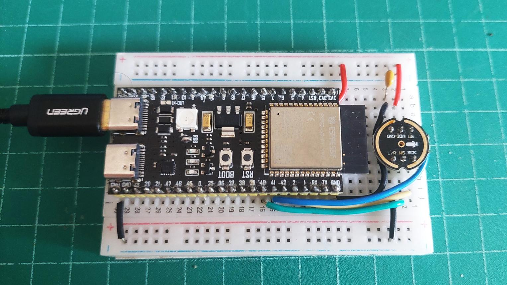
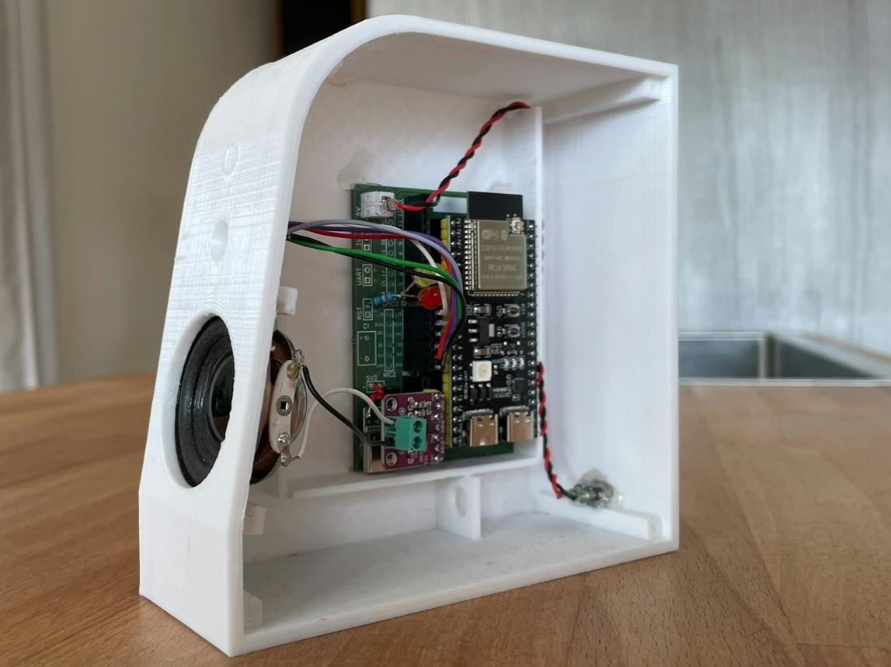
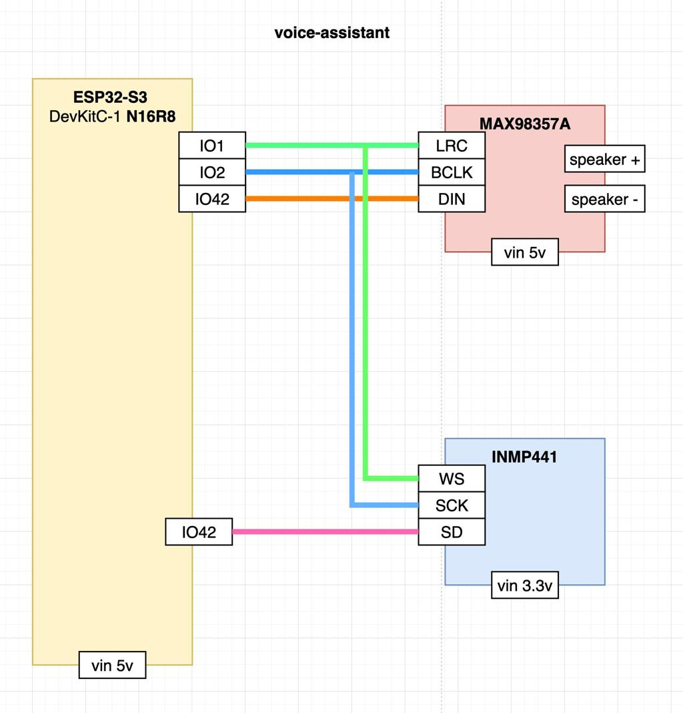

System Map
The complete edge → cloud path. Inference never leaves the device until the keyword crosses threshold.
Interactive 3D Build
A real-time WebGL assembly of the proposed unit — drag to orbit, scroll to zoom. Toggle layers or pull the enclosure apart.
The photo reference sections below still apply.
Hardware Reference
Real build photos, captured during the prototype phase.


Circuit & Pin Map
Reference wiring captured from the build photo. Verify GPIO assignment against your DevKit revision before power-up.

Benchmark Simulator
Repeatable browser harness for the metrics pipeline. Figures shown are engineering targets / scenario values — not verified physical measurements until logged from the ESP32-S3.
[READY] browser-side harness initialized
[MODEL] INT8 DS-CNN · keyword = ORBIT
[DEV] ESP32-S3 scenario profile loaded
[NOTE] no physical sensor is attached to this page
[STATUS] waiting for run…
Live Pipeline Simulation
State transition trace: local listen → KWS match → pre-roll → stream → ASR command. Optionally attach your real microphone — the scope then renders live input from this device.
[VAD] continuous listening
[KWS] awaiting custom keyword…
[NET] radio idle · stream disabled